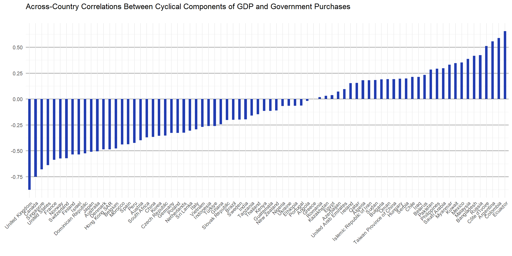
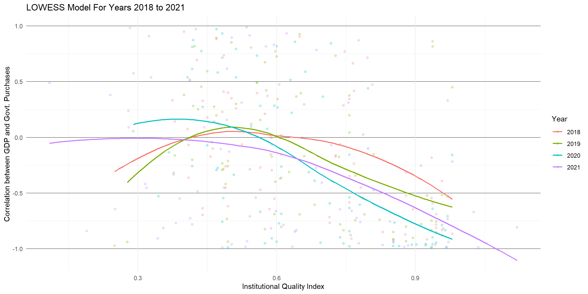

Exploring Fiscal Cyclical Patterns Across the World
Replicating key and interesting figures from ‘On graduation from fiscal procyclicality’
Author
Elías José Mantilla Ibarra
Paper’s Summary
Frankel, Vegh, and Vuletin (2011) proposed that the observed shifts from pro-cyclical to counter-cyclical fiscal policies across a number of economies for the time period ranging from the 1960’s to 2000’s is due to superior or improved quality of the economy’s institutions. They achieved this by means of regression analysis. Indeed, their results show that, even after controlling for other factors that influence the conduct of fiscal policy, the quality of institutions remains a significant and economically important factor. They conclude that higher quality of institutions is associated with reduced pro-cyclicality.
The conduct of fiscal policy matters for a reason. Pro-cyclical fiscal policies, that is, either increased government purchases or reduced tax rates during periods of economic boom are said to exacerbate and prolong the business cycle. By contrast, counter-cyclical fiscal policy, either decreased government purchases or increases in the tax rates, attenuates the business cycle. Counter-cyclical fiscal policies that smooth over the cycle are important because its opposite implies longer booms as wells as longer recessions.
Empirical exercises show that, over the past 5 decades, countries exhibiting counter-cyclical fiscal regimes are overwhelmingly developed and industrialized whereas those exhibiting pro-cyclical are less developed. This fact appears in line with what is observed in other indicators used to gauge the maturity of fiscal policy such as the debt to GDP ratio, rankings by rating agencies and sovereign spreads. The interesting fact singled out by this paper consist of the exploration of changes in the cyclicality of the fiscal regime occurred in some countries.
It is shown that those countries who were once pro-cyclical and are now counter-cyclical - those termed ‘recent graduates’ according to the authors - have had a major increase in the quality of their institutions. The quality of institutions was measured as an average of four indices from the International Country Risk Guide dataset. Panel data models were fitted with and without controls to soundly establish the relation between government outlays cyclicality and institutional quality. Results show that institutional quality is, indeed, associated with reduced pro-cyclicality. Further, it is argued that improvements in institutional quality are responsible for the strength of the relationship. Throughout the time periods under study, institutional quality remains unaffected, except for the class of ‘recent graduates’ that experienced the largest increase.
Exploratory Analysis
The World Economic Outlook and the International Country Risk Guide datasets were the main data sources. From these we can obtain time series of real GDP, government expenditures and the four basic indicators to represent institutional quality used in the paper. The results of this partial replication are presented as follows. First, the data must be rearranged and transformed. Second, a general overview of the correlation between government expenditures and real GPD by means of graphical devices. Third, an overview of the influence of institutional quality to the fiscal regime.
Data Wrangling
Our main dataset - the World Economic Forum - must be transformed. The following operations were performed. Data contents were pivoted from wide to long format. The data column containing variable names was pivoted from long to wide format. Finally, the data rows were filtered for countries with a population over 1 million people and whose share of the economic world is over 0.1 percent.
Code
# load all packages in the tidyverse, plus additional packageslibrary(tidyverse)library(reshape2)# Read in and transform the Word Economic Outlook datasetdf <-read_tsv('../datasets/procyclicality/weo.txt') %>%select(-c('WEO Country Code', 'Units', 'Scale','Subject Descriptor', 'Subject Notes','Country/Series-specific Notes')) %>%filter(`WEO Subject Code`%in%c('NGDP_R', 'GGX', 'LP', 'PPPSH')) %>%pivot_longer(cols =-c('WEO Subject Code', 'Country', 'ISO'), names_to ='Year') %>%pivot_wider(id_cols =c('Country', 'ISO', 'Year'), names_from ='WEO Subject Code') %>%mutate(across(everything(), ~ifelse(. =='n/a', NA, .)),across(c(Year, NGDP_R, PPPSH, LP, GGX), ~as.numeric(gsub(',', '', .)) ) )# Further filter the dataset:# Only countries with population above 1 million and a share of word gross productdf <- df %>%filter( Country %in% (df %>%group_by(Country) %>%summarise(pop =last(LP), ppp =nth(PPPSH, 42)) %>%filter(pop >1, ppp >0.1) %>%pull(Country)), Year >=1995, Country!='Venezuela', Country!='Uzbekistan' ) %>%rename(NGDPR=NGDP_R) %>%select(-c(LP, PPPSH))
Fiscal Procyclicality Across The World
Pro- and counter-cyclicality are measured as the correlation between the cyclical components of two series: real GDP and government purchases. Since this measure consists of a correlation coefficient, it will be restricted to the range from -1 to 1. Positive values indicate a positive relation between changes in GDP and government purchases which describes the phenomenon of fiscal pro-cyclicality whereas negative relation indicates counter-cyclicality.
Several manipulations must be applied to the data before delving into exploratory analysis. At the very intial stage, it is important to perform the following: take the logarithms of the series and calculate the cycle. Taking of logarithm of a series helps to tame excessive variability. The cycle was calculated using the Hodrick-Prescott filter as it was done in the original paper. Additionally, some of the countries in the final selection didn’t have all observations complete. Therefore, a procedure to backward fill these values was used whereby the a missing entry was filled with the next non-missing value.
Code
# Load up the library containing the routine for the Hodrick-Prescott filterlibrary(mFilter)library(zoo)# Obtain the cyclical component of GDP and Government expendituresdf <- df %>%group_by(Country) %>%mutate(across(c(NGDPR, GGX),~na.locf(., fromLast=TRUE)),across(c(NGDPR, GGX),~hpfilter(log(.), freq=1)$cycle,.names ='{col}_CYC'), )
Fiscal regimes vary widely across the world. It is of interest to understand the reasons behind different policy choices, particularly on the assumption that the optimal policy consist of smoothing the cycle which is consistent with a counter-cyclical regime. Most countries in our sample are counter-cyclical, but this result is potentially biased because of the previous filter applied which left countries with a share in global GDP above the threshold of 0.1 percent. It is, however, noteworthy the wide range of values for the correlation between real GDP and government expenditures. Ecuador, at the rightmost position, is the most pro-cyclical country and the United Kingdom, at the leftmost position, is the most counter-cyclical. There is a big chunk of countries for which the relation is weak (0 ± .25) and may be described as acyclical.
As a general trend, most developed countries are found towards the left end of the distribution. This list includes countries such as Japan, UK, US, Norway, as well as some middle- to high-income countries. Towards the center and right end of the distribution the story is not as simple. The positions are shared by low, meddle and high-income countries and a disordered array. The commonalities that tie together pro-cyclical countries are interesting in that they may unveil the reasons that prevent a country to move to a counter-cyclical regime. One common feature shared by many of the countries that sit on right end of the distribution is that they are resource rich. Take the examples of Ecuador, Russia, Kuwait, Mexico, Saudi Arabia, etc.
The causes for fiscal pro-cyclicality reportedly found in the literature include two main strands. First, some countries have imperfect access to international credit markets. Second, political distortions affect the conduct of fiscal policy. Imperfect access to credit markets implies that these countries cannot access credit in times of recession and are forced to cut spending and cut taxes, thus reducing revenue. Political distortions occur when, given an increase in government revenue, politicians want a share of that revenue to support programs associated with their campaings and political parties.
The reason explored by Frankel et al (2011) is that these countries have, on average, institutions of less quality. They pointed to example of Chile which, although appears as more pro-cyclical in this replication, had managed to turn the tide and became counter-cyclical for the most part of the last two decades. This was achieved mainly thanks to a fiscal rule that was monitored by experts.
Code
df %>%group_by(Country) %>%summarise(COR =cor(NGDPR_CYC, GGX_CYC)) %>%ggplot(aes(x=reorder(Country, COR), y=COR)) +geom_bar(stat ='identity', width=0.4, fill ='#213cb0') +scale_y_continuous(breaks =seq(-1, 1, 0.25)) +labs(title ='Across-Country Correlations Between Cyclical Components of GDP and Government Purchases',subtitle ='',x ='',y ='' ) +theme_minimal() +theme(axis.text.x =element_text(angle =45, hjust =1),panel.grid.major.y =element_line(size = .1, color ='black') )

Countries once pro-cyclical can adhere to a counter-cyclical fiscal regime. The fact that this achievement is possible motivates the study for the underlying causes and/or mechanisms that enable this change. Chile is one example, but there are other as shown in the paper. The next figure highlights the trajectories of three countries: Ecuador, Guatemala, and the US. Ecuador exhibits a persistent pattern of high correlation between the expansion of the state and that of the economy. In contrast, the US presents the opposite pattern, although with more variability. Guatemala would stand as what the paper by Frankel et al (2011) would describe as a recent graduate. Its respective series for the rolling correlation went from looking like Ecuador’s to looking more like that of the US.
Code
# Plot rolling correlationsdf %>%group_by(Country) %>%transmute(ROLCOR =rollapplyr(cbind(NGDPR_CYC, GGX_CYC), width=5,FUN=function(x) cor(x[, 1], x[, 2]),by.column=FALSE,fill=NA),Year = Year) %>%ggplot(aes(x = Year, y = ROLCOR, group=Country,color=Country,alpha=Country)) +geom_line() +xlim(1999, 2022) +ylim(-1., 1.) +scale_color_manual(values =c('Ecuador'='#d6c720', 'Guatemala'='blue', 'United States'='red'), na.value ='gray') +scale_alpha_manual(values =c('Ecuador'=1, 'Guatemala'=1, 'United States'=1),na.value =0.2) +scale_y_continuous(breaks =seq(-.75, .75, 0.25)) +labs(title='Rolling Correlation Between The Cyclical Components of GDP and Government Purchases',y ='',x ='Year' ) +theme_minimal() +theme(panel.grid.major.y =element_line(size = .1, color ='black') )
The countries in the panel exhibit wide differences in their paths. Frankel et al (2011) argue that the observed change has to do with improved quality of institutions. This hypothesis can be founded on a exploratory analysis of the relationship between institutional quality and fiscal pro-cyclicality before proceeding to formal statistical modeling.
Institutional Quality and Fiscal Procyclicality
Institutional Quality, as measured in Frankel et al (2011), consists of the average of four indicators included in the Political Risk section from the International Country Risk Guide dataset. A free tier from this paid dataset was used covering the years from 1996 to 2021. The values for 1997 and 1999 were missing and were interpolated via a cubic spline.
Code
# read in a subset of the Political Risk tier from the International Country Risk Guide dataset.poli <-read_tsv('../datasets/procyclicality/icrg.txt') %>%pivot_longer(cols=-c('var', 'Year'), names_to ='ISO') %>%pivot_wider(id_cols =c('Year', 'ISO'), names_from ='var',values_from ='value') %>%mutate(ISO =ifelse(ISO =='ROM', 'ROU', ISO)) %>%rowwise() %>%transmute(ISO=ISO, Year=Year,IQ =mean(c(RQ, VA, CC, GE)))# Merge new data to main dataframedf <- df %>%left_join(poli, by =c('Year', 'ISO')) %>%mutate(IQ =na.spline(IQ)) %>%group_by(Country) %>%mutate(ROLCOR =rollapplyr(cbind(NGDPR_CYC, GGX_CYC), width=5,FUN=function(x) cor(x[, 1], x[, 2]),by.column=FALSE,fill=NA)) %>%drop_na()# Write a function to plot time seriespltime <-function(df_, country, variable) { llimit <-ifelse(variable=='IQ', 0, -1) colour <-ifelse(variable=='IQ', '#e08f0b', '#1421de') title <-ifelse(variable=='IQ', 'Institutional Quality Index', 'Fiscal Procyclicality') df_ %>%filter(Country==country) %>%ggplot(aes(x = Year, y =!!sym(variable))) +geom_line(color=colour) +ylim(llimit, 1) +labs(title = title,x ='',y ='' ) +theme_minimal() +theme(panel.grid.major.y =element_line(size=.1, color='black') )}
Institutional quality and fiscal pro-cyclicality appear to be negatively correlated. From the inspection of the three following visualizations, it must be clearer why it is reasonable to hypothesize that it is likely these series are involved in a causal relationship. Ecuador, the most pro-cyclical country, exhibits the lowest institutional quality index among the three. The US exhibits a consistently high institutional quality index with exception of the most recent periods. Guatemala, our case of interest, presents an increase in institutional quality that closely coincides with the change from pro-cyclicality to counter-cyclicality. Note, please, that the increase in institutional quality comes a bit after the drop in fiscal pro-cyclicality began.
It should be stated, as it is in the paper, that we don’t know the direction of the causality as of yet. Namely, the causality may run from improved institutions to an improved fiscal regimes. Also, an improved fiscal regime may cause institutions to improve. It may be synergic as well. In this regard, Frankel et al (2011) also include the change in institutional quality from first to last period as the main explanatory variable and found that increases in institutional quality were associated with less pro-cyclicality.
Code
# Import library for a grid of chartslibrary(cowplot)plot_grid(pltime(df, 'Ecuador', 'IQ'),pltime(df, 'Ecuador', 'ROLCOR'),nrow =1)
df %>%filter(Year %in%c(2018, 2019, 2020, 2021)) %>%ggplot(aes(x = IQ, y = ROLCOR, group = Year, color =as.factor(Year),s=0.5) ) +geom_point(alpha =0.25) +geom_smooth(linewidth=0.75,span=0.9,se=FALSE) +guides(color =guide_legend(title='Year') ) +labs(title ='LOWESS Model For Years 2018 to 2021',y ='Correlation between GDP and Govt. Purchases',x ='Institutional Quality Index' ) +theme_minimal() +theme(panel.grid.major.y =element_line(linewidth =0.1, colour ='black') )

References
Frankel, Jeffrey A., Carlos A. Vegh, and Guillermo Vuletin, 2011, “On Graduation from Fiscal Procyclicality.” NBER Working Paper No. 17619 (Cambridge, Massachusetts: National Bureau of Economic Research)